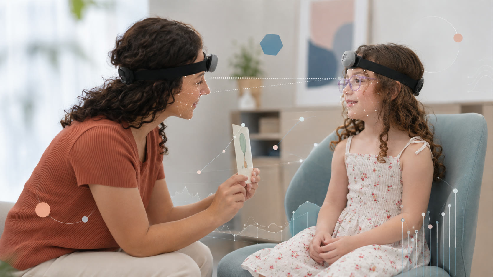
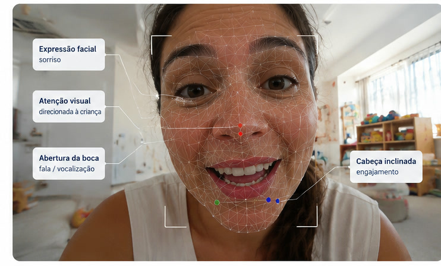
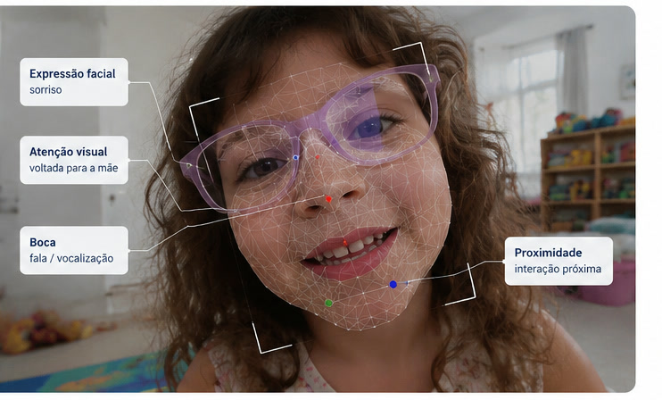

Visão em primeira pessoa & IA
Usamos câmeras vestíveis e métodos computacionais para estudar interações familiares em contextos cotidianos e desenvolver novas formas de observar comportamento e saúde.
O que significa observar em primeira pessoa?
Em vez de observar uma interação apenas de fora, a câmera acompanha a perspectiva de quem participa dela.
Câmeras vestíveis permitem registrar partes de uma interação a partir do ponto de vista de mães, crianças ou outros cuidadores. Isso ajuda a observar aspectos do cotidiano que podem ser difíceis de recuperar depois apenas por questionários ou entrevistas.
A proposta não é substituir o que as pessoas relatam. É combinar diferentes formas de observar a mesma experiência.

O que queremos entender nas interações
Atenção e envolvimento
Como mães, crianças e cuidadores direcionam atenção uns aos outros e ao ambiente durante uma interação.
Responsividade e sincronia
Como respostas entre duas pessoas se organizam ao longo do tempo e como momentos de maior ou menor sintonia aparecem na interação.
Práticas parentais
Como diferentes formas de responder, orientar, acolher ou lidar com situações difíceis aparecem nas relações entre cuidadores e crianças.
Contexto e saúde mental
Como padrões de interação podem se relacionar às trajetórias de saúde mental, às condições familiares e a experiências como as enchentes.
Onde entra a inteligência artificial?
A IA é uma ferramenta de análise — não a resposta da pesquisa.
Registros audiovisuais produzem uma grande quantidade de informação. Métodos computacionais podem ajudar a organizar sinais presentes nesses vídeos e transformar padrões observáveis em medidas que possam ser analisadas de forma sistemática.
Essas medidas podem então ser combinadas com questionários, informações sobre saúde mental e dados longitudinais para estudar relações que seriam difíceis de observar usando uma única fonte de informação.
O objetivo não é diagnosticar pessoas a partir de um vídeo, mas produzir dados de pesquisa sobre interações.


Como um vídeo se transforma em dado?
Registrar
Câmeras vestíveis registram interações em situações definidas pelo protocolo de pesquisa.
Organizar
Os registros são preparados e sincronizados para permitir uma análise sistemática das interações.
Codificar
Equipes treinadas e métodos computacionais transformam aspectos observáveis dos vídeos em variáveis de pesquisa.
Integrar
Essas informações podem ser relacionadas a dados de saúde mental, parentalidade, contexto social e trajetória longitudinal.
Vídeos exigem proteção especial
Registros audiovisuais são dados sensíveis. A participação depende de consentimento específico, e os arquivos são transferidos para armazenamento protegido, com acesso restrito à equipe autorizada.
O processamento dos vídeos segue procedimentos institucionais de segurança e proteção dos participantes.
Uma abordagem conectada a diferentes projetos
Coorte Rio Grande 2019
A Coorte fornece a história longitudinal que permite relacionar padrões de interação a saúde mental, desenvolvimento e contexto ao longo do tempo.
Conheça a Coorte →Enchentes e saúde mental
O projeto das enchentes permite investigar se experiências de maior adversidade e deslocamento se relacionam a interações entre mães e crianças.
Conheça o projeto →Visões do Cuidado
A rede internacional amplia essa abordagem para diferentes países, etapas da vida e contextos de cuidado.
Conheça a rede →Possibilidades de colaboração
Estamos abertos ao diálogo com pesquisadores e instituições interessados em métodos observacionais, estudos longitudinais, interações familiares, saúde mental e análise computacional de dados audiovisuais.
Propor uma colaboração